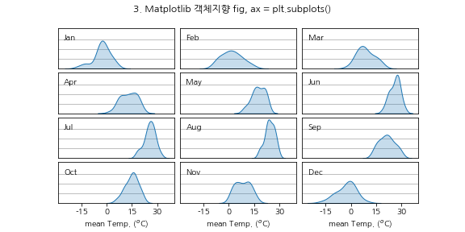

- 시각화를 하다 보면 subplot을 자주 만듭니다.
- subplot을 만드는 방법은 matplotlib에만도 여러 가지가 있고, seaborn에서는 FacetPlot()을 이용해 데이터로부터 subplot을 만들 수도 있습니다.
- 관련 질문이 빈번하게 등장하여 종류별로 정리해 봤습니다.
0. 설정
- 시각화를 위한 라이브러리를 불러오고 한글 출력을 설정합니다.
1
2
3
4
5
6
7import matplotlib.pyplot as plt
import pandas as pd
import numpy as np
import calendar
plt.rcParams['font.family']='NanumGothic'
plt.rcParams['axes.unicode_minus'] = False
- Ridgeline Plot에 사용된 월별 기온 데이터를 활용합니다.
- 여기에서 다운로드받을 수 있습니다.
- 데이터 중 2016년만 선택해 월과 일평균기온만 남깁니다.
1
2
3
4df = pd.read_csv("end-part2_df.csv")
df["year"] = df["date"].apply(lambda x: x.split("-")[0])
df["month"] = df["date"].apply(lambda x: x.split("-")[1]).astype("int")
df_2016_temp = df.loc[df["year"] == "2016"][["month", "meantempm"]]
- 이제부터 이 데이터로 이런 그림을 그리겠습니다.
1. Matplotlib state-based inteface
plt.plot()으로 대표되는 방법입니다.- 구성요소를 차례대로 만드는 방식으로 대부분의 matplotlib 교재와 강의에서 이렇게 시작합니다.
figure를 생성합니다.
- plot의 x와 y 범위를 동일하게 설정하기 위해 데이터로부터 범위를 추출합니다.
plt.subplot()으로 subplot을 생성합니다.
- subplot에 seaborn kdeplot()으로 그림을 그립니다.
plt.명령을 이용해 tick, grid, xlabel, ylabel 설정을 완료합니다.
plt.subplots_adjust()로 subplot 사이 간격을 조정합니다.1
2
3
4
5
6
7
8
9
10
11
12
13
14
15
16
17
18
19
20
21
22
23
24
25
26
27
28
29
30
31
32
33
34
35
36
37
38
39
40
41
42
43
44
45
46
47
48
49
50
51
52
53
54
55
56
57
58
59
60
61
62# 1. matplotlib state-based
# x, y 범위를 데이터의 최대값과 최소값으로 조정. 그림을 그리기 전에 미리 알고 있어야 함.
# x 범위
temp_max = df_2016_temp["meantempm"].max()
temp_min = df_2016_temp["meantempm"].min()
# y 범위 : seaborn 결과에서 객체지향 기법을 통해서 추출해야 함.
# 그렇지 않으면 trial and error로 y범위를 설정해야 함.
ymin = np.inf
ymax = -np.inf
for month in range(1, 13):
temp_month = df_2016_temp["meantempm"].loc[df_2016_temp["month"] == month]
g = sns.kdeplot(temp_month)
ymin_, ymax_ = g.axes.get_ylim()
if ymin_ < ymin:
ymin = ymin_
if ymax_ > ymax:
ymax = ymax_
plt.close()
# figure size 지정
plt.figure(figsize=(8, 4))
for i in range(4):
for j in range(3):
month = i*3 + j + 1 # 월 이름
temp_month = df_2016_temp["meantempm"].loc[df_2016_temp["month"] == month] # 월별 데이터
# plot 공간 생성
plt.subplot(4, 3, month)
# 데이터 분포를 밀도함수로 표현
sns.kdeplot(temp_month, fill=True, zorder=2) # kdeplot은 바로 앞에 있는 subplot에 그려짐.
# kdeplot에 zorder가 없어 grid 위에 그릴 수 없음.
plt.xlim(temp_min, temp_max)
plt.ylim(ymin, ymax)
plt.text(-13, 0.09, calendar.month_abbr[month]) # pyplot에서 subplot 내부 비율에 맞추는 방법을 찾지 못함.
# 데이터 좌표로 입력 : 데이터가 바뀌면 좌표를 바꿔줘야 함.
# 눈금 위치 지정: grid를 그릴 seed, 눈금 제거
plt.yticks(ticks=[0, 0.03, 0.06, 0.09], labels=[])
# 가로선 grid 생성
plt.grid(axis="y", zorder=1)
# y축 label 제거
plt.ylabel("")
# 눈금 제거 (길이를 0으로 만들어서 안보이게)
plt.tick_params(axis="y", length=0)
# 맨 아래 axes에만 x축 눈금과 label남김
if i == 3:
plt.xticks(ticks=[-15, 0, 15, 30], labels=["-15", "0", "15", "30"])
plt.xlabel("mean Temp. ($^o$C)")
# 나머지 axes는 x축 눈금과 label 제거
else:
plt.xticks(ticks=[-15, 0, 15, 30], labels=[])
plt.xlabel("")
plt.tick_params(axis="x", length=0)
plt.suptitle("1. Matplotlib 상태기반 plt.subplot()")
# subplots 사이 간격 조정
plt.subplots_adjust(wspace=0.05, hspace=0.1)
- 그림을 그리기 전에 x 범위를 데이터로부터 먼저 구했습니다.
- 그러나 kdeplot의 특성상 plot이 실제 범위를 초과합니다.
- 그림이 밀도함수를 모두 담지 못하는 경우가 생깁니다.
- 상태기반 인터페이스는 밀도함수에 x 범위를 맞추기 어렵습니다.
- x 범위를 맞추려면 kdeplot을 그린 후에 범위를 추출해야 합니다.
- 하지만 순서대로 그리는 상태기반의 특성상 이 작업이 불가능합니다.
2. Matplotlib object-oriented (1)
- 객체지향 방식은 Figure와 Axes를 사용합니다.
fig = plt.figure()로 전체 공간을 먼저 정의하고,ax = fig.add_subplot()로 개별 공간을 만들 수 있습니다.
figure를 생성합니다.fig.add_subplot()으로 subplot을 생성합니다.
- subplot에 seaborn kdeplot()으로 그림을 그립니다.
- axes list를 이용해 저장해두고 제어합니다.
ax.명령을 이용해 tick, grid, xlabel, ylabel 설정을 완료합니다.
fig.subplots_adjust()로 subplot 사이 간격을 조정합니다.1
2
3
4
5
6
7
8
9
10
11
12
13
14
15
16
17
18
19
20
21
22
23
24
25
26
27
28
29
30
31
32
33
34
35
36
37
38
39
40
41
42
43
44
45
46
47
48
49
50
51
52
53
54
55
56
57
58
59
60
61
62
63
64
65
66
67
68
69
70
71
72
73
74
75
76
77
78
79
80
81# 2. matplotlib object-oriented, ax.add_subplot()
# figure 생성
fig = plt.figure(figsize=(8, 4))
# axes list 생성
axs = []
for i in range(4):
for j in range(3):
month = i*3 + j + 1 # 월 이름
temp_month = df_2016_temp["meantempm"].loc[df_2016_temp["month"] == month] # 월별 데이터
# axes 생성
ax = fig.add_subplot(4, 3, month)
"""
# Alternative
# xlim, ylim은 쉽게 통일되지만 ticklabels가 모두 사라짐.
if month == 1:
ax = fig.add_subplot(4, 3, month)
else:
ax = fig.add_subplot(4, 3, month, sharex=axs[0], sharey=axs[0])
"""
# 데이터 분포를 밀도함수로 표현
sns.kdeplot(temp_month, fill=True, ax=ax, zorder=2) # kdeplot에 zorder가 없어 grid 위에 그릴 수 없음.
# 화면 왼쪽 위에 월 이름을 약자로 표시
ax.text(0.05, 0.7, calendar.month_abbr[month], transform=ax.transAxes)
# 눈금 위치 지정: grid를 그릴 seed
ax.set_yticks([0, 0.03, 0.06, 0.09])
# 가로선 grid 생성
ax.grid(axis="y", zorder=1)
# 눈금 숫자 제거
ax.set_yticklabels([])
# y축 label 제거
ax.set_ylabel("")
# 눈금 제거 (길이를 0으로 만들어서 안보이게)
ax.tick_params(axis="y", length=0)
# 맨 아래 axes에만 x축 눈금과 label남김
if i == 3:
ax.set_xticks([-15, 0, 15, 30])
ax.set_xticklabels(["-15", "0", "15", "30"])
ax.set_xlabel("mean Temp. ($^o$C)")
# 나머지 axes는 x축 눈금과 label 제거
else:
ax.set_xticklabels([])
ax.set_xlabel("")
ax.tick_params(axis="x", length=0)
# axes list에 ax 추가
axs.append(ax)
# x, y 범위를 데이터의 최대값과 최소값으로 조정
# 1번 방법과 같이 미리 구해도 되고 그래프를 그린 뒤에 구할 수도 있음.
xmin, xmax = np.inf, -np.inf
ymin, ymax = np.inf, -np.inf
for ax in axs:
xmin_, xmax_ = ax.get_xlim()
ymin_, ymax_ = ax.get_ylim()
if xmin_ < xmin:
xmin = xmin_
if xmax_ > xmax:
xmax = xmax_
if ymin_ < ymin:
ymin = ymin_
if ymax_ > ymax:
ymax = ymax_
for ax in axs:
ax.set_xlim(xmin, xmax)
ax.set_ylim(ymin, ymax)
fig.suptitle("2. Matplotlib 객체지향 ax = fig.add_subplot()")
# subplots 사이 간격 조정
fig.subplots_adjust(wspace=0.05, hspace=0.1)
객체지향 방식은 그리는 순서에 구애받지 않습니다.
- axes를 만들어두고 나중에 접근할 수 있습니다.
- x 범위처럼 데이터 전체를 아우르는 기준 설정에 좋습니다.
text객체 위치 지정에 유리합니다.
transform인자로 개별 axes 기준 위치 지정이 가능합니다.- 화살표나 도형 삽입시에도 편리합니다.
3. Matplotlib object-oriented (2)
- 어차피 만들 figure와 axes를 한 번에 만들 수 있습니다.
fig, ax = plt.subplot()를 사용합니다.- 여러 인자를 사전에 지정할 수 있습니다.
- 덕택에 전체적으로 코드의 길이가 크게 줄어듭니다.
- 개인적으로 가장 선호하는 방식입니다.
figure와axes를 동시에 생성합니다.
- 생성과 동시에 세부 설정을 완료합니다.
for와enumerate로axes에 하나씩 접근합니다.
다른 방식에 비해 과정이 많이 절약됩니다.
ax.명령을 이용해 tick, grid, xlabel, ylabel 설정을 완료합니다.코드는 다음과 같습니다.
1
2
3
4
5
6
7
8
9
10
11
12
13
14
15
16
17
18
19
20
21
22
23
24
25
26
27
28
29
30
31
32
33
34
35
36
37
38
39
40
41
42
43# 3. matplotlib object-oriented, plt.subplots()
# figure와 axes 동시 생성
fig, axes = plt.subplots(ncols=3, nrows=4, figsize=(8, 4), # 행 수, 열 수 지정, 크기 지정
gridspec_kw={"wspace":0.05, "hspace":0.1}, # subplots 사이 간격 지정
sharex=True, sharey=True) # subplots간 xlim, ylim 통일
# axes를 1D array로 변형 : for loop을 한 번만 사용해도 됨.
axs = axes.ravel()
for month, ax in enumerate(axs, 1): # axs 전체를 looping.
# month는 enumerate로 생성.
temp_month = df_2016_temp["meantempm"].loc[df_2016_temp["month"] == month] # 월별 데이터
# 데이터 분포를 밀도함수로 표현
sns.kdeplot(temp_month, fill=True, ax=ax, zorder=2) # kdeplot에 zorder가 없어 grid 위에 그릴 수 없음.
# 화면 왼쪽 위에 월 이름을 약자로 표시
ax.text(0.05, 0.7, calendar.month_abbr[month], transform=ax.transAxes)
# 눈금 위치 지정: grid를 그릴 seed
ax.set_yticks([0, 0.03, 0.06, 0.09])
# 가로선 grid 생성
ax.grid(axis="y", zorder=1)
# 눈금 숫자 제거
ax.set_yticklabels([])
# y축 label 제거
ax.set_ylabel("")
# 눈금 제거 (길이를 0으로 만들어서 안보이게)
ax.tick_params(axis="y", length=0)
# 맨 아래 axes에만 x축 눈금과 label남김
if month >= 10: # subplot 좌표가 아니라 month로 제어
ax.set_xticks([-15, 0, 15, 30])
ax.set_xticklabels(["-15", "0", "15", "30"])
ax.set_xlabel("mean Temp. ($^o$C)")
# 나머지 axes는 x축 눈금과 label 제거
else:
ax.set_xticklabels([])
ax.set_xlabel("")
ax.tick_params(axis="x", length=0)
fig.suptitle("3. Matplotlib 객체지향 fig, ax = plt.subplots()")
.add_subplot()에 비해 훨씬 짧은 길이로 동일 결과물이 구현됩니다.- 코드가 짧으면 작성 시간 뿐 아니라 오류 가능성도 적어집니다.
4. Seaborn FacetGrid()
- seaborn은 데이터 기반 subplots 제작기능을 탑재하고 있습니다.
FacetGrid()로 가로세로 공간을 만든 후.map()으로 데이터를 덮어 씌웁니다.- axes는
.axes속성으로, - figure는
.fig속성으로 접근합니다.
- subplots의 column과 row를 정의할 데이터가 있어야 합니다.
- 적절한 feature가 있으면 편리하지만
- 그렇지 않다면 만들어 주어야 합니다.
FacetGrid()를 사용할 수 있도록 데이터를 수정합니다.- 12개월이 row순, column 순으로 놓일 수 있도록 준비합니다.
1
2
3
4# FacetGrid()를 사용하기 위한 데이터 수정
df_2016_temp["col"] = df_2016_temp["month"].apply(lambda x: (x-1) % 3)
df_2016_temp["row"] = df_2016_temp["month"].apply(lambda x: (x-1) // 3)
display(df_2016_temp.groupby("month").mean())
figure와axes를 동시에 생성합니다.
- 생성과 동시에 세부 설정을 완료합니다.
- 데이터를 매핑합니다.
axes를 추출합니다.
.ravel()명령으로 1D로 변환합니다.
for와enumerate로axes에 하나씩 접근합니다.
ax.명령을 이용해 tick, grid, xlabel, ylabel 설정을 완료합니다.- 코드는 다음과 같습니다.
1
2
3
4
5
6
7
8
9
10
11
12
13
14
15
16
17
18
19
20
21
22
23
24
25
26
27
28
29
30
31
32
33
34
35
36
37
38# FacetGrid()를 이용해 데이터 기반 subplots 생성
g = sns.FacetGrid(df_2016_temp, row="row", col="col", height=1, aspect=2.67, # row와 col에 들어갈 데이터, 개별 subplot 크기 설정
sharex=True, sharey=True, # subplots간 xlim, ylim 통일
despine=False, # spines 모두 보이게 설정
gridspec_kws={"wspace":0.05, "hspace":0.1}) # subplots 사이 간격 지정
# 데이터 분포를 밀도함수로 표현
g.map(sns.kdeplot, "meantempm", fill=True)
# FacetGrid에서 axes 추출
axes = g.axes
# axes를 1D array로 변형 : for loop을 한 번만 사용해도 됨.
axs = axes.ravel()
# axes에 꾸밈 설정
for month, ax in enumerate(axs, 1):
# FacetGrid가 자동적으로 만드는 title 삭제
ax.set_title("")
# 화면 왼쪽 위에 월 이름을 약자로 표시
ax.text(0.05, 0.7, calendar.month_abbr[month], transform=ax.transAxes)
# x축 범위와 label 설정
ax.set_xticks([-15, 0, 15, 30])
ax.set_xticklabels(["-15", "0", "15", "30"])
# y축 범위와 label 설정
ax.set_yticks([0, 0.03, 0.06, 0.09])
ax.set_yticklabels([])
# 가로선 grid 생성
ax.grid(axis="y")
# y축 눈금 제거 (길이를 0으로 만들어서 안보이게)
ax.tick_params(axis="y", length=0)
# xlabel, ylabel 설정
g.set_axis_labels("mean Temp. ($^o$C)", "")
g.fig.suptitle("4. Seaborn 객체지향 FacetGrid(), sns.kdeplot()")
.add_subplot()과 유사한 길이의 코드로 구현됩니다.- 4가지 방법 전체 코드는 여기에서 다운로드 가능합니다.